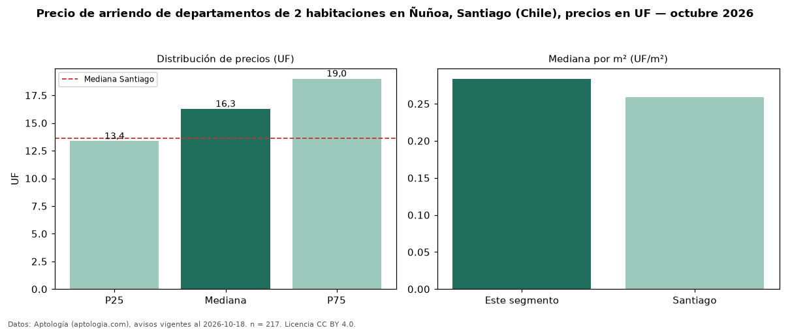

Precio de arriendo de departamentos de 2 habitaciones en Ñuñoa, Santiago (Chile), precios en UF — octubre 2026
En Ñuñoa, Santiago (Chile), la mediana de canon mensual de departamentos de 2 habitaciones es UF 16,27, según 217 avisos vigentes. Eso es 20 % por encima de la mediana de Santiago para departamentos de 2 habitaciones (UF 13,60). Por metro cuadrado, la mediana es UF 0,28/m² al mes (n = 173 avisos con área), 10 % por encima de Santiago (UF 0,26/m²). Son 41 % de los 526 avisos de departamentos en arriendo de la zona, cuya mediana general es UF 14,47 (+12 %). Con el precio por m² de venta del mismo segmento (UF 81,69/m²), la rentabilidad bruta implícita es 4,2 % anual (aproximación con medianas de ofertas distintas). El área mediana anunciada es 56 m². La mitad central de los avisos va de UF 13,36 a UF 19,00 (razón 1,4), una dispersión moderada. Datos: Aptología (aptologia.com), CC BY 4.0 — https://www.aptologia.com/cl/arriendo/santiago/nunoa. Archivos: PDF, CSV con las cifras y gráfica PNG.

| Avisos únicos | 217 |
|---|---|
| Percentil 25 | COP 13 |
| Mediana | COP 16 |
| Percentil 75 | COP 19 |
| Mediana por m² | COP 0 |
Fuente: avisos vigentes de portales inmobiliarios recopilados por Aptología, deduplicados (mínimo 30 avisos únicos por celda). Precios pedidos, no cerrados. Fecha: 2026-10-18.